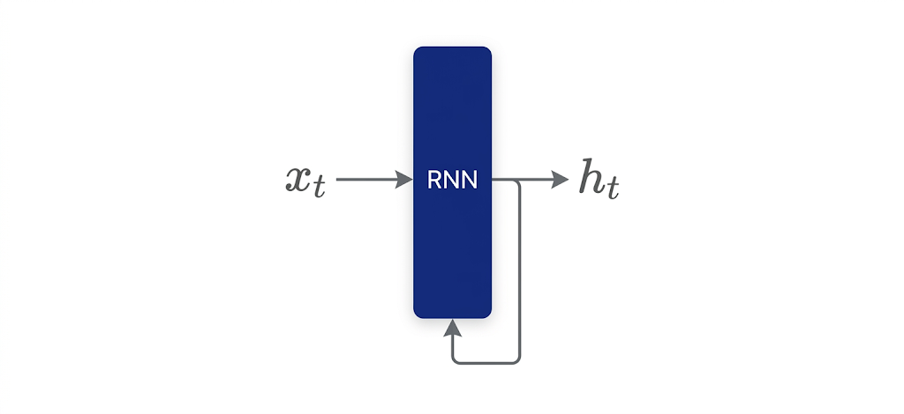
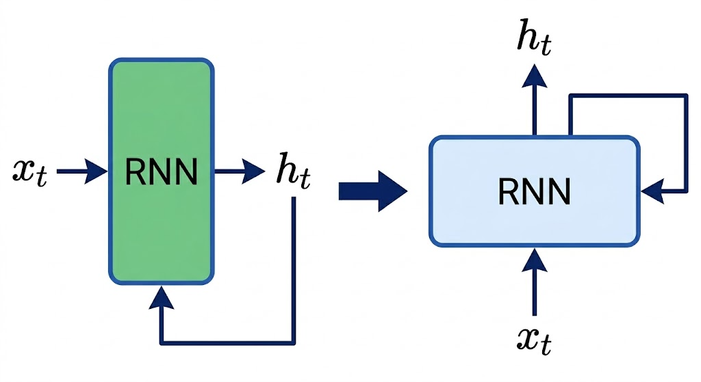
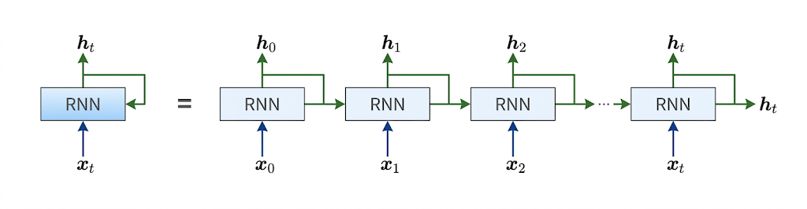
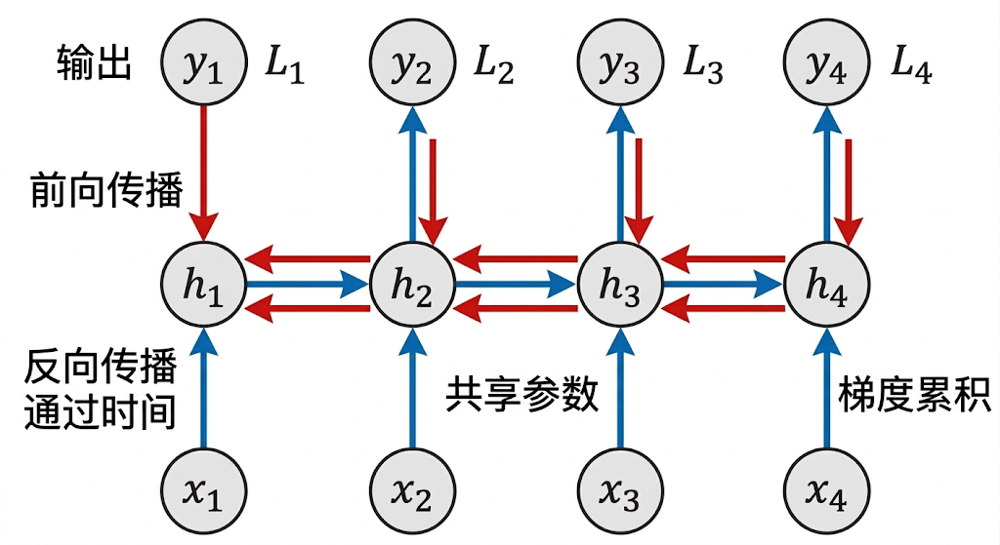
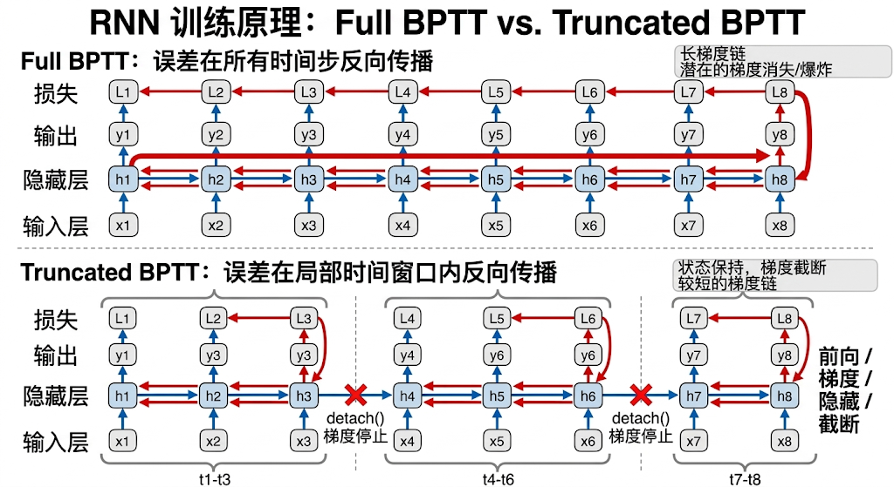

"语言是思想的边界，理解语言就是理解思想"--维特根斯坦，哲学家
1988年，Jeffrey L. Elman在加州大学圣地亚哥分校的实验室里埋首于一台笨重的计算机前。当时的认知科学界被乔姆斯基的“先天语法模块”理论统治，认为语言规则必须预设于大脑中，无法通过数据学习。
然而，Elman在实验中观察到一个诡异现象：当神经网络接收无序字母流时，其隐藏层神经元竟自发形成了类似名词、动词的聚类。这让他产生了一个颠覆性猜想：“语言结构或许本就在时间序列中，无需预设规则。”
Elman在1988年完成论文的初稿《Finding Structure in Time》，试图用简单RNN模型证明语言结构的可学习性。然而，这份稿件在学术圈遭遇了双重打击：乔姆斯基阵营的学者抨击其“用玩具模型解释复杂认知”，MIT语言学教授直接断言：“序列预测与语法无关，这只是统计学的把戏！”；
神经网络研究者则认为Elman网络“计算效率低下”，无法处理真实语言数据。一位审稿人甚至在意见中写道：“这种模型的能力连婴儿的语言习得能力都比不上！”
紧接着论文被《Cognitive Science》期刊拒稿，Elman被迫将研究拆分，先以技术报告形式发布，蛰伏两年打磨实验。1990年，Elman带着更扎实的实验结果卷土重来。
这一次，他设计了一个精妙的“分阶段训练”策略：
戏剧性的时刻出现了，模型成功预测了“The boy who wore red ate the apple”（穿红衣服的男孩吃了苹果）中的动词时态，Elman 激动地拍桌喊道：“看！这就是语法在时间中的涌现！”
最终，修订版论文登上《Cognitive Science》封面，成为连接主义挑战先天语法的里程碑。
论文发表后，争议却并未平息，语言学家 Fodor 公开批评：“Elman 的模型只是拟合数据，无法解释人类语言的创造性生成！”
另外，由于算力限制（1990 年计算机往往需要数周才能训练一个小型网络），Elman 网络结构长期更多停留在研究探索层面。
但它真正重要的地方，不在于当时立刻解决了多大的工业问题，而在于它第一次把“时间中的状态传递”这件事，清晰地带进了神经网络。
今天回头看，RNN 未必是现代 NLP 的终点，却无疑是神经网络处理序列问题的一座重要里程碑。它让人们第一次认真意识到：语言不是一堆静态词袋，而是一条随时间展开、前后互相影响的信息流。
如果说传统基于固定上下文的方法更像是“站在局部看语言”，那么 RNN 提供的思路，则是让模型开始“沿着时间理解语言”。
注：以上故事纯属虚构，如有雷同，纯属巧合。
语言模型是一种预测单词序列（句子）出现概率的模型。具体来说，它使用联合概率分布来评估一个单词序列出现的可能性，也就是：这个句子在多大程度上像一句“自然会被人说出来的话”。
比如，对于“你说早上好”这一单词序列，语言模型可能给出较高概率；而对于“你早上说好”或者“好早上你说”这种不自然的排列，模型给出的概率就会低得多。语言模型并不是在判断一句话“对不对”，而是在判断它“像不像人类自然语言”。
语言模型的核心任务是计算一个句子（即一个词序列）出现的概率，这依赖于时序结构。例如，计算句子“我喜欢读书”的概率，本质上是计算：
$$ P(我) * P(喜欢|我) * P(读书|我喜欢) $$这样的条件概率链，也就是说，后面的词不是凭空出现的，而是建立在前面的词已经出现的条件之上。
从概率学的角度，一个句子可以看作一个词序列 $s = w_1, w_2, ..., w_T$ ，其联合概率 $P(s) = P(w_1, w_2, ..., w_T)$ 直接计算是不现实的。概率论中的链式法则能将其分解为一系列条件概率的乘积：
$$ P(w_1, w_2, ..., w_T) = P(w_1) \times P(w_2|w_1) \times P(w_3|w_1, w_2) \times ... \times P(w_T|w_1, w_2, ..., w_{T-1}) $$或者更简洁地表示为：
$$ P(w_1, w_2, ..., w_T) = \prod_{t=1}^{T} P(w_t|w_1, w_2, ..., w_{t-1}) $$其中， $P(w_t|w_1, w_2, ..., w_{t-1})$ 表示在给定前面所有词 $w_1$ 到 $w_{t-1}$ 的条件下，下一个词是 $w_t$ 的概率。语言模型最核心的任务就是计算这些条件概率，这也是现代语言模型的本质。
问题也正是从这里开始出现的。
如果一个模型只能看到前面很短的一小段上下文，那么它在遇到长句子时，就很可能抓不住真正关键的信息。
比如这句话：“尽管昨晚暴雨导致道路塌方，但救援队依然在凌晨 3 点抵达了灾区。”
这里“暴雨”和“塌方”之间有因果关系，“塌方”和“救援队抵达”之间又构成了完整事件链。如果模型只能盯着当前位置附近的一小块窗口，它看见的往往只是局部邻居，而不是整条时间链。
也正因为如此，语言建模真正困难的地方，从来都不只是“认识词”，而是“如何把前面发生过的事，带到后面的判断中”。而这，正是 RNN 登场的地方。
Jeffrey Elman 是RNN早期研究的核心人物之一。他在 1988年 发表的论文《Finding Structure in Time》中首次系统描述了RNN的循环结构和时序信息处理机制。
他提出的 Elman Network，最重要的思想并不是把神经网络搞得更复杂，而是给它加入了一种“状态会沿时间流动”的能力。
这件事听起来不惊天动地，但意义非常大。词汇的排列顺序会直接决定文本的含义。比如“猫追老鼠”和“老鼠追猫”，词没变，顺序一变，意思完全相反。语言模型之所以难做，恰恰就在于语言不是静态集合，而是先后有序的。
RNN 的核心想法，就是把这种“先后关系”编码进网络内部。它不再把每个词都当成彼此独立的输入，而是让当前时刻的计算，既依赖当前输入，也依赖前一时刻留下来的状态。
RNN 基础模型的核心结构中，可以理解为包含四个关键部分：
（1）输入层：接收当前时刻的输入信号，如当前词对应的向量表示；
（2）隐藏层：通过非线性激活函数（如 tanh 或 sigmoid）处理当前输入与历史状态，生成当前时刻的隐藏状态；
（3）上下文层：用于保存上一时刻隐藏状态的“记忆接口”，它本质上不是一个神秘的新层，而是前一时刻状态的延续；
（4）输出层：基于当前隐藏状态生成预测结果。
这个模型结构的创新点，主要体现在三方面：循环连接设计、时间展开机制和上下文状态的引入。
RNN中循环的设计直接揭示了 RNN 的命名的由来，RNN（Recurrent Neural Network）中的Recurrent源自拉丁语，意思是“反复发生”，可以翻译为“重复发生”“周期性地发生”“循环”，因此RNN可以直译为“复发神经网络”或者“循环神经网络”。

看上图，时刻 $t$ 的输入是 $x_t$，这意味着时序数据（$x_0, x_1,···, x_t,···$）会被输入到层中。然后，以与输入对应的形式，输出（$h_0, h_1,···, h_t,···$）。
有意思的是这个层的输出有分叉，除了输出了 $h_t$，同时还将 $h_t$ 又作为自身输入，也就是说，网络并不是每次都“从零开始思考”，而是会带着上一刻的状态继续往下算。这就达成了循环的目的，也是“循环神经网络”命名的由来。
现在我们的层的数据流动方向都是从左到右的，为了展开神经网络的循环结构，我们将数据改为是从下往上流动的：

时序处理是RNN 区别于传统神经网络的关键特征之一，也是实现长距离上下文窗口的关键技术，而实现这一关键技术的机制则是时间展开。
RNN 的循环结构在图上看起来像一个环，但真正计算时，我们可以把它在时间轴上拆开，理解成：同一个网络单元，在不同时间步被反复使用了很多次。
将上图的结构按照时序进行展开，等号的左边是循环结构，等号的右边则是其按时间序列处理机制下的展开形式，这一过程的本质是将动态循环结构转换为包含多个层的前馈神经网络。
这和我们之前学习到的只有一个方向进行前向传播的神经网络结构是一样的。为了更直观地理解这种结构，我们往往会把它从“横向回环”改写成“沿时间向前展开”的样子：

可以看出，各个时刻的RNN层接收传给该层的输入和前一个RNN层的输出，然后据此计算当前时刻的输出，此时进行的计算可以用下式表示：
$$ h_t = tanh(h_{t-1}W_h + x_tW_x + b) $$RNN 有两个核心权重，分别是将输入 $x_t$ 转化为隐藏状态的权重 $W_x$，以及将前一个时刻隐藏状态 $h_{t-1}$ 转化为当前隐藏状态的权重 $W_h$。此外还有偏置项 $b$。
这个过程的本质，是将动态循环结构转换为一个参数共享的深层前馈网络。
这里最关键的不是公式本身，而是它背后的结构含义：当前状态 $h_t$，同时受“此刻输入”和“过去状态”共同决定。这意味着网络内部形成了一条状态链：
$$ h_0 \rightarrow h_1 \rightarrow h_2 \rightarrow \cdots \rightarrow h_t $$而这条链，正是 RNN 具备“记忆感”的根源。
RNN基础模型为何采用tanh激活函数，而不是Sigmod或者是ReLU激活函数？这主要是由于tanh函数的输出值的范围是有界的，输出范围在 [-1, 1] 之间，并且是关于原点对称的，这意味着其输出的均值接近0。
这两个特性有助于缓解训练时候梯度消失的问题，有关于RNN训练期间梯度的问题，我们将在下一篇章专门来讲解。
继续分析图中的时序处理机制，其中 $x_0～x_t$ 代表的是每个时间步对应一个独立的前馈层，层间通过共享权重传递历史信息。
例如，处理句子“I love AI”时，网络将展开为3个时间步：
这样每一步的状态 $h_t$ 都通过 $h_{t-1}$ 传递历史信息，所有时间步又共享相同的权重矩阵 $W_h$、$W_x$。
也正因此，从结构上看，RNN 并不像固定窗口模型那样存在一个死板的“只能看前面几个词”的硬上限。它可以持续把历史状态往后传。
但要注意，这只是“结构上可以一直传”，并不等于“训练后就一定能一直记住”。真实训练中，普通 RNN 往往很难稳定地学习特别长的依赖关系。
对循环网络展开之后，我们就可以对其进行正向传播和反向传播的训练了，但是RNN与普通的前馈神经网络的不同之处在于其本质是一层神经网络的循环使用（参数共享），所以其参数在所有时间步内是共享的，而普通的前馈神经网络（多层感知机）的每层参数是独立的；
但这里马上会出现一个新的难点：RNN 看起来只是一个循环单元，真正展开后却是一整条时间链。
普通前馈神经网络中，误差主要沿着“层与层之间”反向传播；而在 RNN 中，误差除了沿层传播之外，还必须沿时间传播。这正是 BPTT 的核心。
这种基于时间顺序展开的神经网络的误差反向传播法”，称为Backpropagation Through Time（基于时间的反向传播），简称BPTT。

理解 BPTT，最重要的不是先盯着复杂公式，而是先抓住一个核心画面：
这件事和普通前馈网络非常不一样。前馈网络更像“楼层之间传误差”，而 RNN 则像“时间长河里逆流而上”。
假设我们仍然用一句极简的序列 “I love AI” 来说明。
在时间步 1，输入 “I” 的词向量 $x_1$，结合初始隐藏状态 $h_0$，得到新的隐藏状态：
然后由 $h_1$ 计算输出，预测下一个词的概率分布。
在时间步 2，输入 “love” 的词向量 $x_2$，结合上一时刻隐藏状态 $h_1$，得到：
$$ h_2 =tanh(W_{xh} x_2 +W_{hh} h_1 +b_h ) $$在时间步 3，同理得到：
$$ h_3 =tanh(W_{xh} x_3 +W_{hh} h_2 +b_h ) $$如果我们把每个时间步的损失分别记为 $L_1, L_2, L_3$，那么整个序列的总损失就是：
$$ L=L_1 +L_2 +L_3 $$这一步看起来平平无奇，但后面最难的地方恰恰藏在这里：虽然损失分散在不同时间步上，它们最终都要共同作用到同一组参数上。
先看输出层参数，比如 $W_{ho}$，它对每个时间步的输出都有影响，因此它的总梯度可以写成各时间步贡献之和：
$$ \frac{\partial L}{\partial W_{ho}} = \sum_{t=1}^{T} \frac{\partial L_t}{\partial W_{ho}} $$注释版：
$$ \underbrace{\frac{\partial L}{\partial W_{ho}}}_{\text{总损失对输出层权重的梯度}} = \underbrace{\sum_{t=1}^{T}}_{\text{对所有时刻求和}} \underbrace{\frac{\partial L_t}{\partial W_{ho}}}_{\text{时刻}t\text{损失对输出权重的梯度}} $$这还不算最难。真正麻烦的是隐藏层相关参数，比如 $W_{hh}$。因为 $W_{hh}$ 不只是影响某一个时间步的隐藏状态，而是通过状态链条，间接影响后面很多个时间步。举个例子：
所以，损失对 $h_2$ 的梯度，并不只来自“当前时刻”，还来自“未来时刻”：
$$ \delta_2 = \frac{\partial L_2}{\partial h_2} + \delta_3 \frac{\partial h_3}{\partial h_2} $$注释版：
$$ \underbrace{\delta_2}_{\text{第2层误差项}} = \underbrace{\frac{\partial L_2}{\partial h_2}}_{\text{第2层直接损失梯度}} + \underbrace{\delta_3}_{\text{第3层误差项}} \underbrace{\frac{\partial h_3}{\partial h_2}}_{\text{层间状态梯度}} $$这行式子非常值得停下来想一想。它意味着：当前时刻的状态，不只是对当前负责，它还要为未来负责。
这就是 BPTT 最核心的地方。在普通前馈网络中，某一层主要影响后面几层；而在 RNN 中，某一时刻的状态，会沿着时间链条不断影响未来。
所以对于循环权重 $W_{hh}$ 来说，它的梯度并不是某一个时间步单独算出来的，而是所有时间步贡献的累加：
$$ \frac{\partial L}{\partial W_{hh}} = \sum_{t=1}^{T} \frac{\partial L_t}{\partial W_{hh}} $$注释版：
$$ \underbrace{\frac{\partial L}{\partial W_{hh}}}_{\text{总损失对循环权重的梯度}} = \underbrace{\sum_{t=1}^{T}}_{\text{沿时间序列求和}} \underbrace{\frac{\partial L_t}{\partial W_{hh}}}_{\text{时刻}t\text{的损失梯度}} $$输入权重 $W_{xh}$ 的梯度同理。最后，再用梯度下降更新参数，例如：
$$ W_{hh} = W_{hh} - \eta \frac{\partial L}{\partial W_{hh}} $$为什么 BPTT 既优雅又麻烦？BPTT 的优雅之处在于：它把一个“会循环的网络”，重新变成了我们熟悉的、可以求梯度的网络。
但它的麻烦之处也恰恰在这里：时间链一旦变长，梯度链也会跟着变长。如果一句话很短，比如 “I love AI”，问题不大；但如果序列很长，梯度在时间上不断连乘，就很容易出现两种经典问题：
这也是为什么普通 RNN 虽然在结构上可以不断传递状态，但在训练上却不擅长真正记住很远的内容。
虽然BPTT能够实现梯度计算，但是随着时序数据的时间跨度的增大，即序列不再只是“I love AI”这样较短的长度，BPTT消耗的计算机资源也会成比例地增大。另外，反向传播的梯度也会变得不稳定。
因此，工程上常常不会在整条超长序列上一次性完整反传，而是采用一种更现实的方法：Truncated BPTT（截断式 BPTT）。
它的核心思想很简单：长序列照样按顺序往前读，但反向传播只在一个较短片段内部进行。

比如，我们把一句更长的话：“I love AI and machine learning is fascinating”，设定截断长度 $\tau = 3$，那么就可以把它分成若干小段来处理。
前向传播：状态继续传，但梯度不一定继续传，假设将序列划分为两个片段：
在片段 1 中，前向传播与普通 BPTT 完全一致：
$$ h_1 →h_2 →h_3 $$处理结束后，我们保留 $h_3$ 的数值，把它作为片段 2 的初始状态继续往下算。也就是说，前向的信息流并没有断。但在真实代码实现里，通常会做这样一步：
$$ h_3 =h_3 .detach() $$它的意思是：状态值可以传给下一个片段继续使用，但梯度图在这里断开。这一步非常关键。因为它意味着：片段 2 在反向传播时，不会把梯度一路追溯回片段 1。
反向传播：只在局部时间窗口内回流，于是，在片段 2 里，梯度只会在时间步 4 到 8 之间传播； 在片段 1 里，梯度只会在时间步 1 到 3 之间传播。
这样做的好处非常直接：GPU显存开销更可控、训练更容易落地、梯度不会在超长链条上无限拖行。
但它也带来了一个代价：Truncated BPTT 计算到的，不再是整条长序列上的“完整梯度”，而是一个更可计算、更实用的近似梯度。
这就形成了一个非常工程化的权衡：
这也是深度学习里一个很典型的现实：理论上最完整的方法，不一定是工程上最可用的方法。
Elman提出的RNN基础模型，通过多组实验初步验证了模型具备更长期的“记忆能力”：
1）奇偶校验任务
首先是让模型学会了“数数”，例如输入一串二进制序列：1101，让网络判断其中“1”的总数是奇数还是偶数。
Elman网络的隐藏层通过循环连接保留前一步的状态，就像人脑“记住”之前数过的“1”的数量。例如，输入序列1101时：
第1个“1” → 计数1（奇）；
第2个“1” → 计数2（偶）；
第3个“0” → 保持计数2；
第4个“1” → 计数3（奇）。
这种能力听起来朴素，却已经体现出序列建模的关键特征：当前判断，要依赖过去状态。
2）字母序列预测：让网络玩“猜字母游戏”
第二个任务是字母序列的预测训练，输入字母序列，如ABCDEFG，让网络预测下一个字母。
成功训练出来的网络隐藏层会自发对字母分类。例如，元音（A、E）和辅音（B、C、D）的神经元激活模式不同，就像人脑听到元音和辅音时不同区域活跃。
它未必是人类语言学意义上的“明确规则表”，却会把前面出现过的信息，压缩成一种可以被后续步骤继续利用的状态表示。
通过隐藏层记住前一个字母的状态，从而预测后续字母。例如，输入“A”后，网络知道下一个可能是辅音（如B）而非另一个元音。
结果网络不仅记住字母顺序（如 $A→B→C$），还抽象出元音/辅音规则。例如，当输入新序列“X→Y→Z”时，它也能正确预测，说明学会了通用规律而非死记硬背。
传统语言处理方法往往需要大量人工设计特征，或者只能在有限的上下文范围内做建模。
而 RNN 的出现，带来了一种全新的思路：模型可以通过状态传递，从数据中逐步学习序列中的模式。
它的重要性主要体现在三个层面：
第一，它让神经网络真正开始系统性地处理“序列问题”。 图像可以看成静态空间结构，而语言、语音、时间信号则天然带有前后顺序。RNN 把“顺序”正式引入了神经网络的主舞台。
第二，它让“记忆”第一次以结构化的形式进入模型。 这种记忆当然还很脆弱，也远远不完美，但它已经不再是简单的固定窗口，而是一个可以沿时间传递的状态。
第三，它为后续模型的发展铺了路。 正因为普通 RNN 会遭遇梯度消失、梯度爆炸、长程依赖难学等问题，后来才有了 LSTM、GRU，再往后，才逐步发展到今天更强大的 Transformer 系列模型。
所以，RNN 的意义并不只是“它曾经好不好用”，而是：它第一次把“时间、状态、记忆、序列建模”这些概念，牢牢焊接到了深度学习的骨架里。
它挑战了那种“语言只能靠预设规则才能理解”的直觉，展示出另一条路径：哪怕没有人工写好的语法条文，模型也可以从大量序列中，逐渐学出某些可用的结构。而这，也正是后来整个神经网络 NLP 时代真正打开大门的地方。
语言模型（Language Model）：一种给“词序列”分配概率的模型。它的核心任务，不是判断一句话“有没有道理”，而是判断一句话“像不像自然语言”，也就是估计一个句子在真实语言中出现的可能性。
时序依赖（Temporal Dependency）：指当前词的含义、作用，往往依赖前面已经出现过的词。比如“猫追老鼠”和“老鼠追猫”，词完全一样，但顺序不同，含义就完全不同。语言理解的难点，很多时候不在词本身，而在前后关系。
隐藏状态（Hidden State）：RNN 在每一个时间步内部保存的一种“中间记忆”。它一边接收当前输入，一边携带过去的信息，相当于模型在读到当前词时，脑子里暂时记住的上下文状态。
时间展开（Unrolling）：把 RNN 的循环结构沿时间轴拆开，变成一串按顺序连接的网络单元。展开之后我们会发现，RNN 看起来像很多层，但本质上是在不同时间步反复使用同一组参数。
BPTT（Backpropagation Through Time，基于时间的反向传播）：RNN 的训练方法。它的关键点在于，误差不只是像普通神经网络那样沿层往回传，还要沿时间往前传。也正因为梯度要跨很多时间步传播，普通 RNN 才容易遇到梯度消失、梯度爆炸，以及长程依赖难学习的问题。